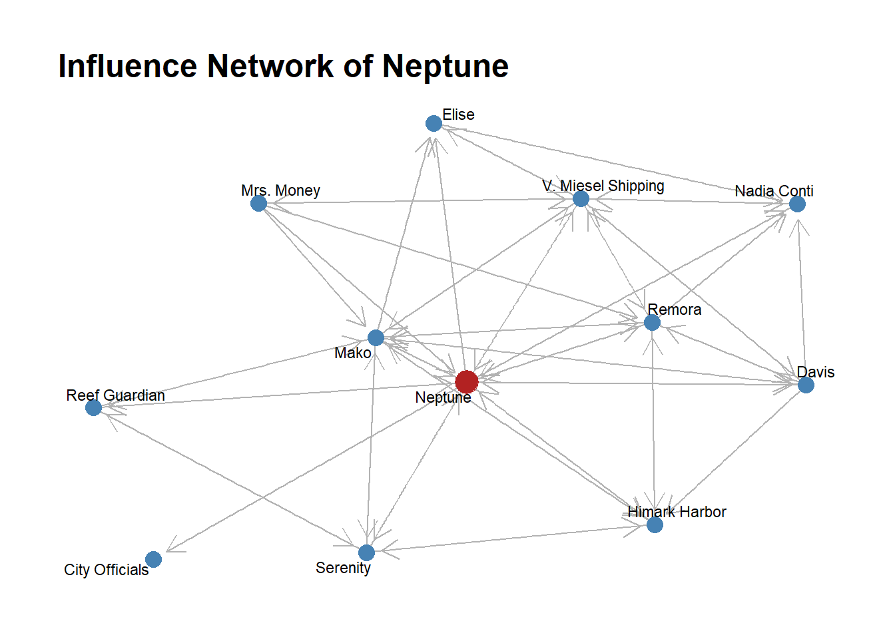
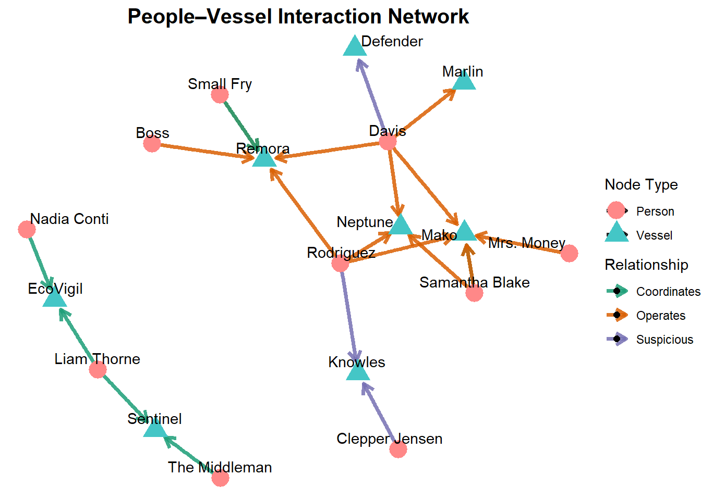
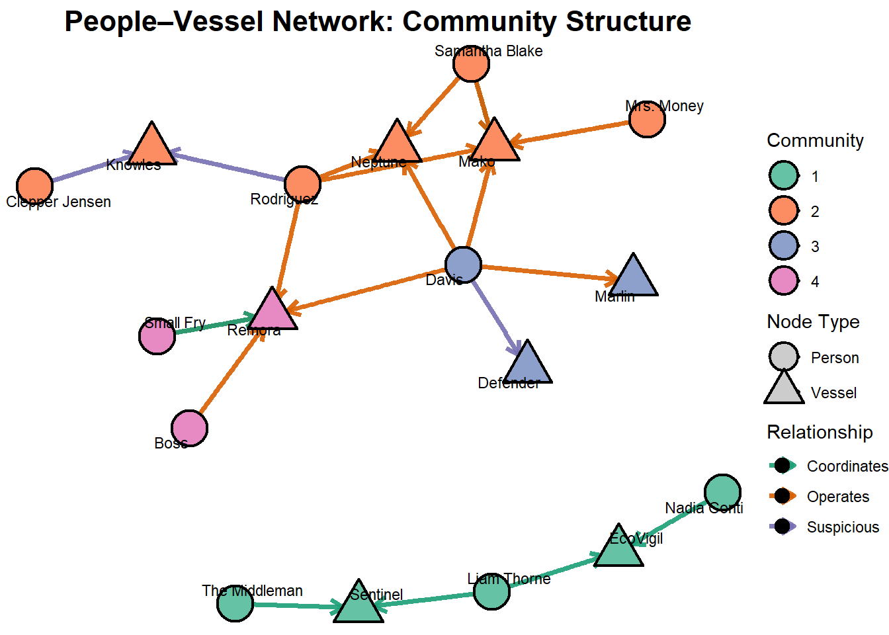

pacman::p_load(
jsonlite,tidyverse,
SmartEDA,tidygraph,
ggraph,lubridate,
dplyr,patchwork,
purrr,scales,
RColorBrewer,plotly,
igraph,viridis,
forcats,knitr,
visNetwork,htmltools,
stringr)Take home Exercise 2
VAST Challenge 2025-Mini-Challenge 3
For the exercise, our group will choose MC 3 as our main topic, the detail background referring to VAST MC3
1.0 Background
Oceanus: From Fishing Nets to Tourism Tensions
Once defined by its fishing traditions, Oceanus has transformed dramatically in the last decade. After a crackdown on illegal fishing, those involved redirected investments toward ocean tourism, creating community friction. When international star Sailor Shift announced plans to film locally, investigative journalist Clepper Jessen uncovered troubling connections around the temporary closure of Nemo Reef. His work exposed expedited approvals and secretive arrangements linking island officials, Sailor’s team, influential local families, and conservationists The Green Guardians—suggesting a story of corruption hiding beneath paradise’s surface.
2.0 Overall Tasks
Clepper has built a knowledge graph from two weeks of intercepted radio communications in Oceanus. Here are the key tasks to be analyzed:
Task 1: Temporal Communication Patterns
Create visual analytics to identify daily patterns in communication timing
Analyze how these patterns changed over the two-week observation period
Focus on a specific entity and use this information to determine who has influence over them.
Task 2: Relationship Analysis
Develop visualizations to explore connections between vessels and people
Identify closely associated groups and the predominant topics for each group
Task 3: Pseudonym Identification
Expand visualizations to reveal who is using pseudonyms
Visual analytics to identify common entity
Explain how understanding pseudonyms changes interpretation of activities
3.0 Setting up
3.1 Loading packages
| Package | Description |
|---|---|
| jsonlite | JSON parsing and generation |
| tidyverse | Core data-science suite (dplyr, ggplot2, etc.) |
| SmartEDA | Automated exploratory data analysis |
| tidygraph | Tidy tools for graph-data manipulation and analysis |
| ggraph | Grammar-based graph/network visualization |
| lubridate | Easy parsing and manipulation of dates/times |
| dplyr | Grammar of data manipulation (filter, mutate, etc.) |
| patchwork | Combine multiple ggplots into a unified layout |
| purrr | Functional programming tools for lists and vectors |
| scales | Scale functions for visualization (axis breaks, formatting) |
| RColorBrewer | Color palettes for maps and plots |
| plotly | Interactive web-based charts |
| igraph | Network analysis and graph algorithms |
| viridis | Color scales for scientific visualization (colorblind-friendly) |
| forcats | Tools for working with categorical variables (factors) |
| knitr | Dynamic report generation and literate programming |
| visNetwork | Interactive network visualization in R |
| htmltools | Tools for HTML generation and dependency management |
| stringr | Consistent, simple tools for string manipulation |
3.2 Loading data
MC3_graph <- fromJSON("data/MC3_graph.json")
glimpse(MC3_graph)List of 5
$ directed : logi TRUE
$ multigraph: logi FALSE
$ graph :List of 4
..$ mode : chr "static"
..$ edge_default: Named list()
..$ node_default: Named list()
..$ name : chr "VAST_MC3_Knowledge_Graph"
$ nodes :'data.frame': 1159 obs. of 31 variables:
..$ type : chr [1:1159] "Entity" "Entity" "Entity" "Entity" ...
..$ label : chr [1:1159] "Sam" "Kelly" "Nadia Conti" "Elise" ...
..$ name : chr [1:1159] "Sam" "Kelly" "Nadia Conti" "Elise" ...
..$ sub_type : chr [1:1159] "Person" "Person" "Person" "Person" ...
..$ id : chr [1:1159] "Sam" "Kelly" "Nadia Conti" "Elise" ...
..$ timestamp : chr [1:1159] NA NA NA NA ...
..$ monitoring_type : chr [1:1159] NA NA NA NA ...
..$ findings : chr [1:1159] NA NA NA NA ...
..$ content : chr [1:1159] NA NA NA NA ...
..$ assessment_type : chr [1:1159] NA NA NA NA ...
..$ results : chr [1:1159] NA NA NA NA ...
..$ movement_type : chr [1:1159] NA NA NA NA ...
..$ destination : chr [1:1159] NA NA NA NA ...
..$ enforcement_type : chr [1:1159] NA NA NA NA ...
..$ outcome : chr [1:1159] NA NA NA NA ...
..$ activity_type : chr [1:1159] NA NA NA NA ...
..$ participants : int [1:1159] NA NA NA NA NA NA NA NA NA NA ...
..$ thing_collected :'data.frame': 1159 obs. of 2 variables:
.. ..$ type: chr [1:1159] NA NA NA NA ...
.. ..$ name: chr [1:1159] NA NA NA NA ...
..$ reference : chr [1:1159] NA NA NA NA ...
..$ date : chr [1:1159] NA NA NA NA ...
..$ time : chr [1:1159] NA NA NA NA ...
..$ friendship_type : chr [1:1159] NA NA NA NA ...
..$ permission_type : chr [1:1159] NA NA NA NA ...
..$ start_date : chr [1:1159] NA NA NA NA ...
..$ end_date : chr [1:1159] NA NA NA NA ...
..$ report_type : chr [1:1159] NA NA NA NA ...
..$ submission_date : chr [1:1159] NA NA NA NA ...
..$ jurisdiction_type: chr [1:1159] NA NA NA NA ...
..$ authority_level : chr [1:1159] NA NA NA NA ...
..$ coordination_type: chr [1:1159] NA NA NA NA ...
..$ operational_role : chr [1:1159] NA NA NA NA ...
$ edges :'data.frame': 3226 obs. of 5 variables:
..$ id : chr [1:3226] "2" "3" "5" "3013" ...
..$ is_inferred: logi [1:3226] TRUE FALSE TRUE TRUE TRUE TRUE ...
..$ source : chr [1:3226] "Sam" "Sam" "Sam" "Sam" ...
..$ target : chr [1:3226] "Relationship_Suspicious_217" "Event_Communication_370" "Event_Assessment_600" "Relationship_Colleagues_430" ...
..$ type : chr [1:3226] NA "sent" NA NA ...MC3_schema <- fromJSON("data/MC3_schema.json")
glimpse(MC3_schema)List of 1
$ schema:List of 2
..$ nodes:List of 3
.. ..$ Entity :List of 2
.. ..$ Event :List of 2
.. ..$ Relationship:List of 2
..$ edges:List of 3
.. ..$ description: chr "Connections between nodes in the knowledge graph"
.. ..$ is_inferred: chr "bool"
.. ..$ types :'data.frame': 6 obs. of 5 variables:3.3 Examining the data structure
nodes_tbl <- as_tibble(MC3_graph$nodes)
edges_tbl <- as_tibble(MC3_graph$edges)kable(head(nodes_tbl, 10))| type | label | name | sub_type | id | timestamp | monitoring_type | findings | content | assessment_type | results | movement_type | destination | enforcement_type | outcome | activity_type | participants | thing_collected | reference | date | time | friendship_type | permission_type | start_date | end_date | report_type | submission_date | jurisdiction_type | authority_level | coordination_type | operational_role |
|---|---|---|---|---|---|---|---|---|---|---|---|---|---|---|---|---|---|---|---|---|---|---|---|---|---|---|---|---|---|---|
| Entity | Sam | Sam | Person | Sam | NA | NA | NA | NA | NA | NA | NA | NA | NA | NA | NA | NA | NA | NA | NA | NA | NA | NA | NA | NA | NA | NA | NA | NA | NA | NA |
| Entity | Kelly | Kelly | Person | Kelly | NA | NA | NA | NA | NA | NA | NA | NA | NA | NA | NA | NA | NA | NA | NA | NA | NA | NA | NA | NA | NA | NA | NA | NA | NA | NA |
| Entity | Nadia Conti | Nadia Conti | Person | Nadia Conti | NA | NA | NA | NA | NA | NA | NA | NA | NA | NA | NA | NA | NA | NA | NA | NA | NA | NA | NA | NA | NA | NA | NA | NA | NA | NA |
| Entity | Elise | Elise | Person | Elise | NA | NA | NA | NA | NA | NA | NA | NA | NA | NA | NA | NA | NA | NA | NA | NA | NA | NA | NA | NA | NA | NA | NA | NA | NA | NA |
| Entity | Liam Thorne | Liam Thorne | Person | Liam Thorne | NA | NA | NA | NA | NA | NA | NA | NA | NA | NA | NA | NA | NA | NA | NA | NA | NA | NA | NA | NA | NA | NA | NA | NA | NA | NA |
| Entity | Samantha Blake | Samantha Blake | Person | Samantha Blake | NA | NA | NA | NA | NA | NA | NA | NA | NA | NA | NA | NA | NA | NA | NA | NA | NA | NA | NA | NA | NA | NA | NA | NA | NA | NA |
| Entity | Davis | Davis | Person | Davis | NA | NA | NA | NA | NA | NA | NA | NA | NA | NA | NA | NA | NA | NA | NA | NA | NA | NA | NA | NA | NA | NA | NA | NA | NA | NA |
| Entity | Rodriguez | Rodriguez | Person | Rodriguez | NA | NA | NA | NA | NA | NA | NA | NA | NA | NA | NA | NA | NA | NA | NA | NA | NA | NA | NA | NA | NA | NA | NA | NA | NA | NA |
| Entity | Sailor Shift | Sailor Shift | Person | Sailor Shift | NA | NA | NA | NA | NA | NA | NA | NA | NA | NA | NA | NA | NA | NA | NA | NA | NA | NA | NA | NA | NA | NA | NA | NA | NA | NA |
| Entity | Clepper Jensen | Clepper Jensen | Person | Clepper Jensen | NA | NA | NA | NA | NA | NA | NA | NA | NA | NA | NA | NA | NA | NA | NA | NA | NA | NA | NA | NA | NA | NA | NA | NA | NA | NA |
kable(head(edges_tbl, 10))| id | is_inferred | source | target | type |
|---|---|---|---|---|
| 2 | TRUE | Sam | Relationship_Suspicious_217 | NA |
| 3 | FALSE | Sam | Event_Communication_370 | sent |
| 5 | TRUE | Sam | Event_Assessment_600 | NA |
| 3013 | TRUE | Sam | Relationship_Colleagues_430 | NA |
| NA | TRUE | Sam | Relationship_Friends_272 | NA |
| NA | TRUE | Sam | Relationship_Colleagues_215 | NA |
| NA | TRUE | Sam | Relationship_Colleagues_431 | NA |
| 8 | FALSE | Kelly | Event_Communication_3 | sent |
| 10 | FALSE | Kelly | Event_Communication_443 | sent |
| NA | TRUE | Kelly | Relationship_Friends_272 | NA |
after split to nodes and edges, the data show 3226 edges and 1159 nodes
4.Initial EDA
It is time for us to apply appropriate EDA methods to examine the data.
In the code chunk below, ExpCatViz() of SmartEDA package is used to reveal the frequency distribution of all categorical fields in nodes_tbl tibble dataframe.
ExpCatViz(data = nodes_tbl,
col = "red")[[1]]
[[2]]
[[3]]
[[4]]
[[5]]
[[6]]
[[7]]
[[8]]
[[9]]
[[10]]
[[11]]
[[12]]
[[13]]
[[14]]
On the other hands, code chunk below uses ExpCATViz() of SmartEDA package to reveal the frequency distribution of all categorical fields in MC3_edges tibble data frame.
ExpCatViz(data=edges_tbl,
col="lightblue")[[1]]
5.0 Task 1-Clepper found that messages frequently came in at around the same time each day.
Task 1.1: Create visual analytics to identify daily patterns in communication timing
ggplot(data=nodes_tbl,
aes(y=`type`))+
geom_bar()
ggplot(data=nodes_tbl,
aes(y=`sub_type`))+
geom_bar()Step 1: Generate Node Sub-Type Inventory
# Extract unique sub_types for each node type
entities <- sort(unique(nodes_tbl$sub_type[nodes_tbl$type == "Entity"]))
events <- sort(unique(nodes_tbl$sub_type[nodes_tbl$type == "Event"]))
relationships <- sort(unique(nodes_tbl$sub_type[nodes_tbl$type == "Relationship"]))
node_inventory <- list(
Entities = entities,
Events = events,
Relationships = relationships
)Step 2: List down type and relevant sub types
for (grp in names(node_inventory)) {
cat("**", grp, "** (", length(node_inventory[[grp]]), "):\n", sep = "")
cat(paste0(" - ", node_inventory[[grp]]), sep = "\n")
cat("\n")
}**Entities** (5):
- Group
- Location
- Organization
- Person
- Vessel
**Events** (11):
- Assessment
- Collaborate
- Communication
- Criticize
- Enforcement
- Fishing
- HarborReport
- Monitoring
- TourActivity
- TransponderPing
- VesselMovement
**Relationships** (9):
- AccessPermission
- Colleagues
- Coordinates
- Friends
- Jurisdiction
- Operates
- Reports
- Suspicious
- UnfriendlyStep 3: Create communication nodes
based on the above list, we noticed that based on the task requirement, now we only focus on type=“event” and sub_type =“communication”
comm_nodes <-nodes_tbl %>%
filter(type=="Event",
sub_type == "Communication") %>%
select(event_id = id,timestamp)
glimpse(comm_nodes)Rows: 584
Columns: 2
$ event_id <chr> "Event_Communication_1", "Event_Communication_2", "Event_Com…
$ timestamp <chr> "2040-10-01 08:09:00", "2040-10-01 08:10:00", "2040-10-01 08…Step 4: Define sender and receiver
ggplot(data=edges_tbl,
aes(y=`type`))+
geom_bar()
Step 5: Extract data from sender and receiver
sent_edges <-edges_tbl %>% filter(type=="sent")%>%
select(sender = source,event_id=target)
recv_edges <-edges_tbl %>% filter(type=="received")%>%
select(event_id = source,receiver=target)Step 6: using inner_join to combine sender and receiver
msgs <- sent_edges %>%
inner_join(recv_edges, by="event_id") %>%
inner_join(comm_nodes, by="event_id") %>%
mutate(ts = ymd_hms(timestamp, tz="UTC")) %>%
mutate(date = as_date(ts), hour = hour(ts))Step 7: Visualizing the heat map
heatmap_data <- msgs %>%
count(date, hour) %>%
complete(
date = seq(min(date), max(date), by = "1 day"),
hour = 0:23,
fill = list(n = 0)
)
ggplot(heatmap_data, aes(x=hour, y=date, fill=n)) +
geom_tile(color="white") +
scale_x_continuous(
breaks = 0:23,
expand = c(0,0)
)+
scale_y_date(
breaks = seq(min(heatmap_data$date), max(heatmap_data$date), by = "1 day"),
date_labels = "%b %d",
expand = c(0, 0)
) +
scale_fill_distiller(
name = "Messages",
palette = "Spectral",
direction = 1
) +
labs(
title = "Daily Communication Patterns",
x = "Hour of Day",
y = "Date"
) +
theme_minimal() +
theme(
axis.text.x = element_text(hjust = 0.5),
axis.text.y = element_text(size = 8),
panel.grid = element_blank()
)
Task 1.2 Compare the shape of daily rhythm between week 1 and week 2
msgs <- msgs %>%
mutate(
week = if_else(date <= min(date) + days(6), "Week 1", "Week 2")
)
# Count and normalize within each week
week_patterns <- msgs %>%
count(week, hour) %>%
group_by(week) %>%
mutate(proportion = n / sum(n))
hour_breaks <- seq(min(week_patterns$hour), max(week_patterns$hour), by = 1)
prop_breaks <- seq(
0,
ceiling(max(week_patterns$proportion) * 100) / 100,
by = 0.02
)
ggplot(week_patterns, aes(x = hour, y = proportion, color = week)) +
geom_line(size = 1.2) +
geom_point(size = 3) +
scale_x_continuous(breaks = hour_breaks) +
scale_y_continuous(
breaks = prop_breaks,
labels = percent_format(accuracy = 1)
) +
labs(
title = "Hourly Communication Patterns: Week 1 vs Week 2",
x = "Hour of Day",
y = "Percent of Total Messages"
) +
theme_light(base_size = 12) +
theme(
plot.title = element_text(face = "bold", size = 16, hjust = 0.5),
legend.position = "top",
legend.title = element_blank(),
panel.grid.major = element_line(color = "grey80"),
panel.grid.minor = element_line(color = "grey90"),
axis.text.x = element_text(vjust = 0.5),
axis.text.y = element_text(size = 8)
)
Task 1.3: Focus on a specific entity and use this information to determine who has influence over them.
entity_info <- nodes_tbl %>%
filter(type == "Entity") %>%
select(id, target_subtype = sub_type)
msgs2 <- msgs %>%
left_join(entity_info, by = c("receiver" = "id"))
top_inf <- msgs2 %>%
filter(!is.na(receiver)) %>%
count(target_subtype, receiver, sender, sort = TRUE) %>%
group_by(target_subtype, receiver) %>%
slice_max(n, n = 10) %>%
ungroup()
plot_list <- top_inf %>%
group_split(target_subtype) %>%
map(~{
subtype <- unique(.x$target_subtype)
ggplot(.x, aes(
x = reorder(sender, n, .desc=TRUE),
y = n,
fill = receiver,
text = paste0(
"Subtype: ", subtype, "<br>",
"Sender: ", sender, "<br>",
"Receiver: ", receiver, "<br>",
"Count: ", n
)
)) +
geom_col(color = "white") +
scale_fill_viridis_d(option = "turbo", name="Receiver") +
coord_flip() +
labs(
title = paste("Subtype:", subtype),
x = "Influencer (Sender)",
y = "Message Count"
) +
theme_minimal(base_size = 12) +
theme(
strip.text = element_text(face = "bold"),
axis.text.y = element_text(size = 8),
panel.grid.major = element_line(color = "grey80"),
panel.grid.minor = element_line(color = "grey90"),
legend.position = "bottom"
)
})
plots <- map(plot_list, ~ggplotly(.x, tooltip = "text"))
tagList(plots)ee_edges <- msgs %>% select(from = sender, to = receiver)
entity_nodes <- nodes_tbl %>%
filter(type == "Entity") %>%
select(id, name)
entity_graph <- tbl_graph(nodes = entity_nodes, edges = ee_edges, directed = TRUE)
target <- "Neptune"
g_ig <- as.igraph(entity_graph, strict = FALSE)
root_idx <- which(V(g_ig)$name == target)
ego_vs <- unique(c(
root_idx,
neighbors(g_ig, root_idx, mode = "in"),
neighbors(g_ig, root_idx, mode = "out")
))
subg <- induced_subgraph(g_ig, vids = ego_vs)
ego_graph <- as_tbl_graph(subg)
ggraph(ego_graph, layout = "kk") +
geom_edge_link(
aes(label = NULL),
arrow = arrow(length = unit(4, "mm")),
end_cap = circle(3, 'mm'),
color = "grey70"
) +
geom_node_point(
aes(filter = (name == target)),
size = 6,
color = "firebrick"
) +
geom_node_point(
aes(filter = (name != target)),
size = 4,
color = "steelblue"
) +
geom_node_text(aes(label = name), repel = TRUE, size = 3) +
labs(title = paste("Influence Network of", target)) +
theme_graph()
ee_edges <- msgs %>% select(from = sender, to = receiver)
entity_nodes <- nodes_tbl %>%
filter(type == "Entity") %>%
select(id, name)
entity_graph <- tbl_graph(nodes = entity_nodes, edges = ee_edges, directed = TRUE)
target <- "Oceanus City Council"
g_ig <- as.igraph(entity_graph, strict = FALSE)
root_idx <- which(V(g_ig)$name == target)
ego_vs <- unique(c(
root_idx,
neighbors(g_ig, root_idx, mode = "in"),
neighbors(g_ig, root_idx, mode = "out")
))
subg <- induced_subgraph(g_ig, vids = ego_vs)
ego_graph <- as_tbl_graph(subg)
ggraph(ego_graph, layout = "kk") +
geom_edge_link(
aes(label = NULL),
arrow = arrow(length = unit(4, "mm")),
end_cap = circle(3, 'mm'),
color = "grey70"
) +
geom_node_point(
aes(filter = (name == target)),
size = 6,
color = "firebrick"
) +
geom_node_point(
aes(filter = (name != target)),
size = 4,
color = "steelblue"
) +
geom_node_text(aes(label = name), repel = TRUE, size = 3) +
labs(title = paste("Influence Network of", target)) +
theme_graph()
ee_edges <- msgs %>% select(from = sender, to = receiver)
entity_nodes <- nodes_tbl %>%
filter(type == "Entity") %>%
select(id, name)
entity_graph <- tbl_graph(nodes = entity_nodes, edges = ee_edges, directed = TRUE)
target <- "Green Guardians"
g_ig <- as.igraph(entity_graph, strict = FALSE)
root_idx <- which(V(g_ig)$name == target)
ego_vs <- unique(c(
root_idx,
neighbors(g_ig, root_idx, mode = "in"),
neighbors(g_ig, root_idx, mode = "out")
))
subg <- induced_subgraph(g_ig, vids = ego_vs)
ego_graph <- as_tbl_graph(subg)
ggraph(ego_graph, layout = "kk") +
geom_edge_link(
aes(label = NULL),
arrow = arrow(length = unit(4, "mm")),
end_cap = circle(3, 'mm'),
color = "grey70"
) +
geom_node_point(
aes(filter = (name == target)),
size = 6,
color = "firebrick"
) +
geom_node_point(
aes(filter = (name != target)),
size = 4,
color = "steelblue"
) +
geom_node_text(aes(label = name), repel = TRUE, size = 3) +
labs(title = paste("Influence Network of", target)) +
theme_graph()
ee_edges <- msgs %>% select(from = sender, to = receiver)
entity_nodes <- nodes_tbl %>%
filter(type == "Entity") %>%
select(id, name)
entity_graph <- tbl_graph(nodes = entity_nodes, edges = ee_edges, directed = TRUE)
target <- "The Intern"
g_ig <- as.igraph(entity_graph, strict = FALSE)
root_idx <- which(V(g_ig)$name == target)
ego_vs <- unique(c(
root_idx,
neighbors(g_ig, root_idx, mode = "in"),
neighbors(g_ig, root_idx, mode = "out")
))
subg <- induced_subgraph(g_ig, vids = ego_vs)
ego_graph <- as_tbl_graph(subg)
ggraph(ego_graph, layout = "kk") +
geom_edge_link(
aes(label = NULL),
arrow = arrow(length = unit(4, "mm")),
end_cap = circle(3, 'mm'),
color = "grey70"
) +
geom_node_point(
aes(filter = (name == target)),
size = 6,
color = "firebrick"
) +
geom_node_point(
aes(filter = (name != target)),
size = 4,
color = "steelblue"
) +
geom_node_text(aes(label = name), repel = TRUE, size = 3) +
labs(title = paste("Influence Network of", target)) +
theme_graph()ee_edges <- msgs %>% select(from = sender, to = receiver)
entity_nodes <- nodes_tbl %>%
filter(type == "Entity") %>%
select(id, name)
entity_graph <- tbl_graph(nodes = entity_nodes, edges = ee_edges, directed = TRUE)
target <- "Reef Guardian"
g_ig <- as.igraph(entity_graph, strict = FALSE)
root_idx <- which(V(g_ig)$name == target)
ego_vs <- unique(c(
root_idx,
neighbors(g_ig, root_idx, mode = "in"),
neighbors(g_ig, root_idx, mode = "out")
))
subg <- induced_subgraph(g_ig, vids = ego_vs)
ego_graph <- as_tbl_graph(subg)
ggraph(ego_graph, layout = "kk") +
geom_edge_link(
aes(label = NULL),
arrow = arrow(length = unit(4, "mm")),
end_cap = circle(3, 'mm'),
color = "grey70"
) +
geom_node_point(
aes(filter = (name == target)),
size = 6,
color = "firebrick"
) +
geom_node_point(
aes(filter = (name != target)),
size = 4,
color = "steelblue"
) +
geom_node_text(aes(label = name), repel = TRUE, size = 3) +
labs(title = paste("Influence Network of", target)) +
theme_graph()
Task 2: Clepper has noticed that people often communicate with (or about) the same people or vessels, and that grouping them together may help with the investigation.
Task 2.1 :Develop visualizations to explore connections between vessels and people
Step1:Clean the nodes and edges data
clean the raw nodes and edges data to ensure there are no missing values, all IDs are unique, and types are consistent.
mc3_nodes_cleaned <- nodes_tbl %>%
mutate(id = as.character(id)) %>%
filter(!is.na(id)) %>%
distinct(id, .keep_all = TRUE) %>%
select(-thing_collected,everything())
mc3_edges_cleaned <- edges_tbl %>%
rename(from_id = source, to_id = target) %>%
mutate(across(c(from_id, to_id), as.character)) %>%
filter(from_id %in% mc3_nodes_cleaned$id, to_id %in% mc3_nodes_cleaned$id) %>%
filter(!is.na(from_id), !is.na(to_id))Step 2: Extract person–vessel indirect links
Identify “Person” and “Vessel” nodes, and link them through “Relationship” nodes to extract all person–relationship–vessel triples.
people_nodes <- mc3_nodes_cleaned %>% filter(sub_type == "Person")
vessel_nodes <- mc3_nodes_cleaned %>% filter(sub_type == "Vessel")
relationship_nodes <- mc3_nodes_cleaned %>%
filter(grepl("^Relationship_", id))
person_relationship_edges <- mc3_edges_cleaned %>%
filter(from_id %in% people_nodes$id & to_id %in% relationship_nodes$id)
relationship_vessel_edges <- mc3_edges_cleaned %>%
filter(from_id %in% relationship_nodes$id & to_id %in% vessel_nodes$id)
person_to_relationship <- person_relationship_edges %>%
select(person_id = from_id, relationship_id = to_id)
relationship_to_vessel <- relationship_vessel_edges %>%
select(relationship_id = from_id, vessel_id = to_id)
person_vessel_links <- person_to_relationship %>%
inner_join(relationship_to_vessel, by = "relationship_id") %>%
select(person_id, vessel_id, relationship_id)Step 3: Add labels and types for nodes and edges
Add labels to each person and vessel node, and add relationship type to edges for visualization.
person_vessel_links <- person_vessel_links %>%
left_join(people_nodes %>% select(id, person_label = label), by = c("person_id" = "id")) %>%
left_join(vessel_nodes %>% select(id, vessel_label = label), by = c("vessel_id" = "id"))
person_vessel_links <- person_vessel_links %>%
mutate(relationship_type = stringr::str_extract(relationship_id, "(?<=Relationship_)[^_]+"))
edges_pv <- person_vessel_links %>%
mutate(
from = person_label,
to = vessel_label
) %>%
select(from, to, relationship_type)Step 4: Prepare nodes/edges table for visualization
Combine all nodes (person + vessel) into a nodes dataframe with type and color, and add color to the edge dataframe.
nodes <- data.frame(
id = unique(c(edges_pv$from, edges_pv$to)),
label = unique(c(edges_pv$from, edges_pv$to))
) %>%
left_join(
bind_rows(
people_nodes %>% select(label, type = sub_type),
vessel_nodes %>% select(label, type = sub_type)
),
by = "label"
) %>%
mutate(
shape = ifelse(type == "Person", 16, 17),
color = ifelse(type == "Person", "#FF8888", "#44C6C6")
) %>%
select(id, label, type, shape, color)
relation_types <- sort(unique(edges_pv$relationship_type))
if (length(relation_types) <= 8) {
relation_colors <- RColorBrewer::brewer.pal(length(relation_types), "Dark2")
} else {
relation_colors <- colorRampPalette(RColorBrewer::brewer.pal(8, "Dark2"))(length(relation_types))
}
relation_color_map <- setNames(relation_colors, relation_types)
edges <- edges_pv %>%
mutate(
relationship = relationship_type,
color = relation_color_map[relationship_type]
) %>%
select(from, to, relationship, color)Step 5: Plot static network with node/edge legends
Use ggraph to plot a static network diagram. Node types (person/vessel) have different shapes and colors, and the legend on the right automatically distinguishes them. Edge colors represent relationship types.
graph_pv <- tbl_graph(
nodes = nodes,
edges = edges %>% rename(label = relationship),
directed = TRUE
)
ggraph(graph_pv, layout = 'fr') +
geom_edge_link(
aes(color = label),
arrow = arrow(length = unit(3, 'mm')),
end_cap = circle(3, 'mm'),
width = 1.4,
alpha = 0.85,
show.legend = TRUE
) +
geom_node_point(
aes(shape = type, color = type),
size = 6,
show.legend = TRUE
) +
geom_node_text(
aes(label = label),
repel = TRUE,
size = 3.8,
vjust = 1.5,
segment.color = NA
) +
scale_shape_manual(
values = c("Person" = 16, "Vessel" = 17),
name = "Node Type"
) +
scale_color_manual(
values = c("Person" = "#FF8888", "Vessel" = "#44C6C6"),
name = "Node Type"
) +
scale_edge_color_manual(
values = relation_color_map,
name = "Relationship"
) +
guides(
color = guide_legend(override.aes = list(size = 6)),
shape = guide_legend(override.aes = list(size = 6)),
edge_color = guide_legend(override.aes = list(linetype = 1, size = 2))
) +
theme_void() +
labs(title = "People–Vessel Interaction Network") +
theme(
legend.position = "right",
plot.title = element_text(hjust = 0.5, size = 15, face = "bold")
)
Task 2.2 ：Identify closely associated groups and the predominant topics for each group
Step 1: Data preparation
# Convert directed graph to undirected for community detection
ig_undir <- as.undirected(as.igraph(graph_pv), mode = "collapse")
#run Louvain community detection
com <- cluster_louvain(ig_undir)
membership_vec <- membership(com)
# assign community back to tbl_graph
graph_pv <- graph_pv %>%
activate(nodes) %>%
mutate(community = as.factor(membership_vec[seq_len(n())]))
#extract node table with community info
nodes <- as_tibble(graph_pv, "nodes")Step 2: Community membership summary
group_summary <- nodes %>%
group_by(community, type) %>%
summarise(
members = paste(label, collapse = ", "),
.groups = "drop"
)
kable(group_summary)| community | type | members |
|---|---|---|
| 1 | Person | Nadia Conti, Liam Thorne, The Middleman |
| 1 | Vessel | EcoVigil, Sentinel |
| 2 | Person | Samantha Blake, Rodriguez, Clepper Jensen, Mrs. Money |
| 2 | Vessel | Mako, Neptune, Knowles |
| 3 | Person | Davis |
| 3 | Vessel | Marlin, Defender |
| 4 | Person | Boss, Small Fry |
| 4 | Vessel | Remora |
Step 3:Visualization of community structure
n_communities <- length(unique(na.omit(nodes$community)))
if(n_communities > 8) {
palette <- colorRampPalette(brewer.pal(8, "Set2"))(n_communities)
} else {
palette <- brewer.pal(max(3, n_communities), "Set2")
}
relation_types <- unique(edges$label)
n_rel <- length(relation_types)
relation_colors <- brewer.pal(max(3, n_rel), "Dark2")
relation_color_map <- setNames(relation_colors, relation_types)
ggraph(graph_pv, layout = 'fr') +
geom_edge_link(
aes(color = label),
arrow = arrow(length = unit(3, 'mm')),
end_cap = circle(3, 'mm'),
width = 1.3,
alpha = 0.9,
show.legend = TRUE
) +
geom_node_point(
aes(shape = type, fill = community),
size = 9,
color = "black",
stroke = 1.1,
alpha = 1,
show.legend = TRUE
) +
geom_node_text(
aes(label = label),
repel = TRUE,
size = 3,
segment.color = NA
) +
scale_shape_manual(
values = c("Person" = 21, "Vessel" = 24),
name = "Node Type"
) +
scale_fill_manual(
values = palette,
name = "Community"
) +
scale_edge_color_manual(
values = relation_color_map,
name = "Relationship"
) +
guides(
fill = guide_legend(
override.aes = list(shape = 21, size = 7, color = "black", stroke = 1.2)
),
shape = guide_legend(
override.aes = list(size = 7, fill = "#CCCCCC", color = "black", stroke = 1.2)
),
edge_color = guide_legend(
override.aes = list(linetype = 1, size = 3, alpha = 1)
)
) +
theme_void() +
labs(title = "People–Vessel Network: Community Structure") +
theme(
legend.position = "right",
legend.box = "vertical",
plot.title = element_text(hjust = 0.5, size = 16, face = "bold")
)
group_summary$topic <- case_when(
grepl("EcoVigil|Green Guardians|Nadia Conti", group_summary$members, ignore.case = TRUE) ~ "Environmentalism",
grepl("Mako|Marlin|Neptune|Remora", group_summary$members, ignore.case = TRUE) ~ "Fishing/Leisure",
grepl("Clepper Jensen|Knowles", group_summary$members, ignore.case = TRUE) ~ "Media/Investigation",
grepl("Boss|Small Fry", group_summary$members, ignore.case = TRUE) ~ "Pseudonym Group",
TRUE ~ "Other"
)
kable(group_summary)| community | type | members | topic |
|---|---|---|---|
| 1 | Person | Nadia Conti, Liam Thorne, The Middleman | Environmentalism |
| 1 | Vessel | EcoVigil, Sentinel | Environmentalism |
| 2 | Person | Samantha Blake, Rodriguez, Clepper Jensen, Mrs. Money | Media/Investigation |
| 2 | Vessel | Mako, Neptune, Knowles | Fishing/Leisure |
| 3 | Person | Davis | Other |
| 3 | Vessel | Marlin, Defender | Fishing/Leisure |
| 4 | Person | Boss, Small Fry | Pseudonym Group |
| 4 | Vessel | Remora | Fishing/Leisure |
Task 3: Pseudonym Identification
Task 3.1 Expand visualizations to reveal who is using pseudonyms
To detect the pseudonyms, below code is based on two rules for sub_type = "Person":
Name starting with “The” :These are very likely pseudonyms, such as “The Lookout” or “The Intern”
Obvious pseudonym keywords: Names that contain certain keywords commonly used as roles or code names (e.g., “Boss”, “Accountant”, “Middleman”, etc.).
nodes_person_vessel <- nodes_tbl %>%
filter(sub_type %in% c("Person","Vessel"))
pseudonym_keywords <- c("Boss", "Accountant", "Middleman", "Lookout", "Money", "Intern", "Small Fry")
nodes_person_vessel <- nodes_person_vessel %>%
mutate(
is_the_prefix = str_detect(label, "^The "),
is_keyword = str_detect(label, paste(pseudonym_keywords, collapse = "|")),
is_pseudonym = is_the_prefix | is_keyword
)
pseudo_table <- nodes_person_vessel%>%
filter(is_pseudonym == TRUE) %>%
select(id, label, sub_type)
print(pseudo_table)# A tibble: 7 × 3
id label sub_type
<chr> <chr> <chr>
1 The Intern The Intern Person
2 The Lookout The Lookout Person
3 The Accountant The Accountant Person
4 Mrs. Money Mrs. Money Person
5 The Middleman The Middleman Person
6 Boss Boss Person
7 Small Fry Small Fry Person Task 3.2 ：Visual analytics to identify common entity (Pseudonym and their network)
pseudo_labels <- pseudo_table$label
core_ids <- nodes_tbl %>% filter(sub_type %in% c("Person", "Vessel")) %>% pull(label)
pseudo_to_rel <- edges_tbl %>%
filter(source %in% pseudo_labels & grepl("^Relationship_", target)) %>%
select(pseudo = source, relationship = target, type_pseudo = type)
rel_to_person <- edges_tbl %>%
filter(grepl("^Relationship_", source) & target %in% core_ids) %>%
select(relationship = source, person = target, type_person = type)
pseudo_rel_network <- pseudo_to_rel %>%
inner_join(rel_to_person, by = "relationship") %>%
select(pseudonym = pseudo, relationship, person, type_pseudonym = type_pseudo, type_person)
extract_reltype <- function(x) {
m <- regmatches(x, regexpr("_(.*?)_", x))
if (length(m) == 0) return("Other")
gsub("_", "", m)
}
rel_type_vec <- sapply(pseudo_rel_network$relationship, extract_reltype)
rel_types <- unique(rel_type_vec)
rel_colors <- setNames(RColorBrewer::brewer.pal(max(3, length(rel_types)), "Set2"), rel_types)
person_vessel_info <- nodes_tbl %>%
filter(label %in% core_ids | label %in% pseudo_labels) %>%
select(label, sub_type) %>%
distinct(label, .keep_all = TRUE)
nodes_all <- unique(c(pseudo_rel_network$pseudonym, pseudo_rel_network$relationship, pseudo_rel_network$person))
nodes_viz <- tibble(id = nodes_all) %>%
left_join(person_vessel_info, by = c("id" = "label"))
nodes_viz <- tibble(id = nodes_all) %>%
left_join(person_vessel_info, by = c("id" = "label")) %>%
mutate(
group = ifelse(id %in% pseudo_labels, "Pseudonym",
ifelse(!is.na(sub_type) & sub_type == "Person", "Person",
ifelse(!is.na(sub_type) & sub_type == "Vessel", "Vessel",
ifelse(grepl("^Relationship_", id), extract_reltype(id), "Other")))),
label = ifelse(grepl("^Relationship_", id), "", id),
title = ifelse(group == "Pseudonym", paste0("Pseudonym: ", id, "<br>Type: ", sub_type),
ifelse(group == "Person", paste0("Person: ", id),
ifelse(group == "Vessel", paste0("Vessel: ", id),
ifelse(grepl("^Relationship_", id), paste0("Relationship: ", extract_reltype(id)), id)))),
color = ifelse(group == "Pseudonym", "red",
ifelse(group == "Person", "skyblue",
ifelse(group == "Vessel", "orange",
ifelse(group %in% rel_types, rel_colors[group], "grey")))),
shape = ifelse(group == "Pseudonym", "square",
ifelse(group == "Person", "dot",
ifelse(group == "Vessel", "triangle",
ifelse(group %in% rel_types, "diamond", "dot"))))
)
edges_viz <- bind_rows(
pseudo_rel_network %>%
mutate(rel_type = extract_reltype(relationship)) %>%
transmute(
from = pseudonym, to = relationship,
color = rel_colors[rel_type],
arrows = "to", title = paste0("Pseudonym to Relationship: ", rel_type)
),
pseudo_rel_network %>%
mutate(rel_type = extract_reltype(relationship)) %>%
transmute(
from = relationship, to = person,
color = rel_colors[rel_type],
arrows = "to", title = paste0("Relationship to Person/Vessel: ", rel_type)
)
)
all_legend <- list(
list(label = "Pseudonym", shape = "square", color = "red"),
list(label = "Person", shape = "dot", color = "skyblue"),
list(label = "Vessel", shape = "triangle", color = "orange")
)
visNetwork(nodes_viz, edges_viz, width = "100%", height = "800px") %>%
visEdges(arrows = "to",smooth = FALSE) %>%
visOptions(highlightNearest = TRUE, nodesIdSelection = TRUE, selectedBy = "group") %>%
visLegend(
addNodes = all_legend,
useGroups = FALSE
) %>%
visPhysics(stabilization = TRUE)